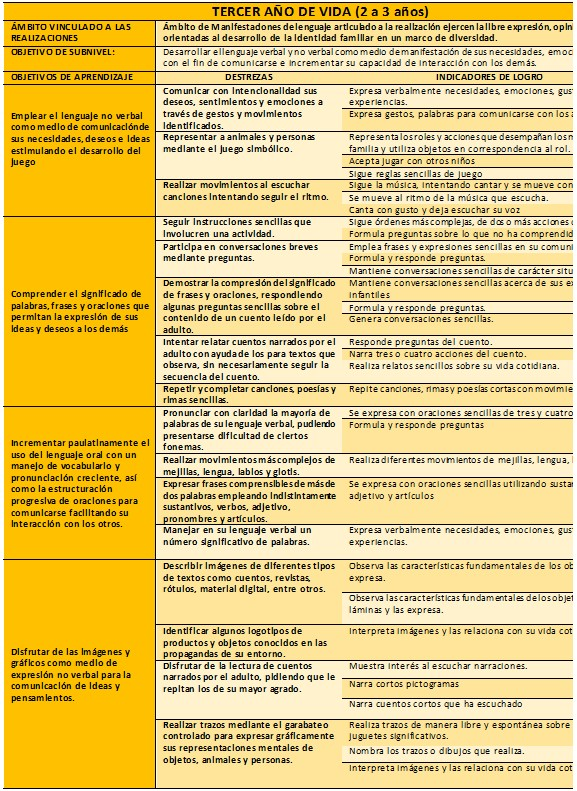

1 TEMA: GUÍA DE ORIENTACIONES PARA LA APLICACIÓN DEL CURRÍCULO DE EDUCACIÓN INICIAL SUB NIVEL 1 MIES - MINEDUC
1.1 INTRODUCCIÓN
El infante en apenas tres años de vida, pasa de ser totalmente dependiente de un adulto, a convertirse en un ser cada vez más autónomo e independiente. Se trata de una etapa de importantes y acelerados cambios, altamente sensibles a las influencias externas, que van a ir construyendo su individualidad. En esta etapa de la vida, el efecto, la salud y la calidad de atención que recibe en el entorno familiar, las oportunidades las experiencias comunitarias e institucionales, el tipo de integraciones sociales que entabla, van a ir determinando el proceso de desarrollo y aprendizaje.
La infancia temprana se considera desde el momento del nacimiento hasta los tres años de edad; esta etapa es la más significativa del desarrollo humano por los profundos cambios que se viven y por las informaciones de carácter neurológico, físico y psicológico que ocurren en este periodo.
Sin embargo, para lograr que la actividad programada responda a las necesidades y características de cada niña o niño y adquiera la destreza esperada, es importante identificar los casos o conductas que le llevaran al logro de la misma.
Este intrincado y complejo proceso, en el que lo madurativo se ve afectado por el interactivo y viceversa, depende en buena medida, de que la calidad de cuidado y las oportunidades de educación temprana que se le proporcione a la niña o niño, aspectos que deberán ser tomados en cuenta cuando se tiene la responsabilidad y compromiso de lograr que esta primera etapa de la vida se convierta en un pilar fundamental del individuo en formación, especialmente cuando se trata de los grupos más vulnerables de la población. Mientras se encuentre organizado el tiempo que la niña y el niño transcurre con el adulto, mayor será el efecto de su accionar; todo lo que se haga o deje de hacer en esta etapa repercutirá en su vida futura.
1.2 POLITICA DE LA INFANCIA
El presente norma está dirigido a las Coordinadoras, Educadoras de los Centros Infantiles del Ministerio de Inclusión Económica y Social, siendo su objetivo brindarles una herramienta pedagógica que les permita planificar, con mayor efectividad sus actividades educativas y se logre estimular el interés de la niña y el niño por aprender.
El Ministerio de Educación, como entidad rectora de la política pública educativa a nivel de país pone a disposición de las personas operadora de los servicios el Currículo de Educación Inicial cuyo fin es orientar su accionar pedagógico. El currículo cuenta con una estructura que responde a los aspectos socio afectivo y cognitivos en el desarrollo y aprendizaje, organizados en ejes ámbitos de desarrollo y aprendizaje destreza, orientaciones metodológicas y orientaciones para el proceso de evaluación.
La guía de orientaciones, es un complemento del Currículo de Educación Inicial que, tiene la finalidad orientar a las educadoras en el proceso de planificación educativa en los servicios de CDIs, para ello damos a conocer:
1.3 POLITICA SELECCIONADA
LA GUÍA DE ORIENTACIONES PARA LA APLICACIÓN DEL CURRÍCULO DE EDUCACIÓN INICIAL SUB NIVEL 1 MIES - MINEDUC
1.4 JUSTIFICACION
En el marco del Currículo de Educación Inicial 2014 del Ministerio de Educación, el Ministerio de Inclusión Económica y Social, como ente rector de la política pública para el desarrollo integral de las niñas y niños de 0 a 36 meses, a través de la Subsecretaria de Desarrollo Infantil Integral, da cumplimiento a lo que establece la LOEI, aplicando el Currículo de Educación Inicial Sub nivel 1, a través de los procesos educativos y planificaciones que realizan las educadoras familiares en los servicios Creciendo con Nuestros Hijos, como las Coordinadoras y educadoras en los centros de desarrollo infantiles.
El presente documento recoge los aportes teórico- metodológico y la experiencia en el ámbito de la primera infancia a través de la asesoría cubana del CELEP y la propuesta del equipo técnico de la Subsecretaria de Desarrollo Infantil integral.
1.5 FUNDAMENTACION
El currículo de Educación Inicial se fundamenta en:
- Constitución de la Republica
En su art. 26 estipula que la educación es derecho de las personas a lo largo de su vida y un deber inexcusable del Estado y, en su Art. 344 reconoce por primera vez en el país a la Educación Inicial como parte del Sistema Educativo Nacional.
- Plan Nacional del Buen Vivir (2013-2017)
Plantea las políticas de la primera infancia para el desarrollo integral como una prioridad de la política pública.
- El Ministerio Coordinador de Desarrollo Social (2014)
Define la Estrategia Nacional Intersectorial de Primera Infancia cuyo objetivo en consolidar un modelo integral e intersectorial de atención a la primera infancia con enfoque territorial, intercultural y de género, asegurar el acceso, la cobertura y calidad de los servicios y promover la corresponsabilidad de la familia y comunidad.
- El Código de la Niñez y Adolescencia (2003) en el artículo 37, numeral 4,
Establece que el Estado debe garantizar el acceso efectivo a la educación inicial de cero a cinco años, para lo cual desarrollara programas y proyectos flexibles y abiertos, adecuados a las necesidades culturales de los educandos.
- Reglamento General de la LOEI en su capítulo tercero, en el artículo 27
Determina que “el nivel de Educación Inicial consta de dos subniveles:
Inicial 1 que comprenda infantes de hasta 3 años de edad.
Inicial 2 que comprende a infantes de tres a cinco años de edad, lo que permite que el diseño curricular se expliciten aprendizajes según las características de los niños en cada uno de los subniveles considerando las diversidades lingüísticas y culturales.
2 GUIA DIDACTICA
2.1 CONCRECION CURRICULAR
ANEXO 1 ARTICULACIÓN ÁMBITOS REALIZACIONES ÁMBITO DE MANIFESTACIONES DE LENGUAJE ARTICULADO A LA REALIZACIÓN EJERCEN LA LIBRE EXPRESIÓN, OPINIONES E IDEAS ORIENTADAS AL DESARROLLO DE LA IDENTIDAD FAMILIAR EN UN MARCO DE DIVERSIDAD.

ÁMBITO DEL DESCUBRIMIENTO DEL MEDIO NATURAL Y CULTURAL ARTICULADO AL DISFRUTA DE RELACIONES POSITIVAS Y ESPACIOS DE JUEGO, DE DESARROLLO DE LENGUAJE Y DEL APRENDIZAJE.
2.3 METODOLOGIA
Anexo 6 y 9 MOMENTOS METODOLÓGICOS INTENCIONADO-LENGUAJE
Niñas y Niños de 1 a 3 años
- Inicio y exploración:
- Saludo y bienvenida de las niñas y niños
- Motivar a la niña o niño para el desarrollo del juego
- Exploración del material didáctico seleccionado
- Exploración de experiencias de aprendizajes previas
- Demostración y desarrollo:
- Demostrar el desarrollo del juego planificado
- Motivar a las niñas y niños su participación
- Desarrollar la destreza planificada mediante la repetición
- Aplicar niveles de dificultad y ayuda
- Motivar para que el juego se desarrolle en forma autónoma
- Cierre y evaluación de conocimientos adquiridos:
- Retroalimentar las actividades desarrolladas.
- Evaluar los indicadores planteados mediante la observación.
- Invitar a las niñas y niños a guardar el material y organizar el ambiente de aprendizaje
- Motivar a las niñas y niños para la actividad planificada del siguiente día.
2.4 SECUENCIA COMPETENCIAL

2.5 EVALUACION DE LA SITUACION DE APRENDIZAJE
FICHA DE OBSERVACIÓN
ACTIVIDADES DE APRENDIZAJE
PREGUNTAS ABIERTAS JUEGO INTENCIONADO
CREDITOS
Ministerio de educación del ecuador (2014), currículo de educación inicial, guía metodológica para implementación del currículo de educación inicial.
Este trabajo tiene licencia bajo CC BY-NC-ND 4.0 © 2 por B
Obra publicada con Licencia Creative Commons Reconocimiento Compartir igual 4.0